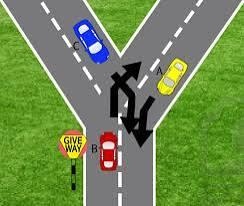
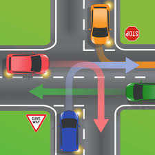
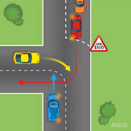
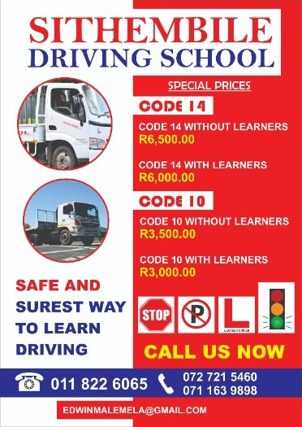

Sithembile Driving School
Home
Contacts
About Us
Welcome to Sithembile Driving School, your premier choice for safe and reliable driving education in Germiston. With over a decade of dedicated service,
Sithembile Driving School has been committed to providing top-notch training, using the latest luxurious cars, and employing experienced instructors to ensure
our students' success on the road.


At Sithembile Driving School, we take pride in our unmatched pass rate for all our students. Our team of instructors is not only highly qualified but also
deeply passionate about empowering learners to become confident and responsible drivers. Whether you're a beginner or looking to brush up on your driving
skills, we offer comprehensive lessons tailored to meet your individual needs.

We specialize in offering classes for various license codes, including Code 8, Code 10, and Code 14. From mastering the basics of road safety to advanced
driving techniques, our curriculum covers all aspects required to navigate the streets with confidence.

Additionally, we understand that booking a driving test can be a daunting task. That's why we provide assistance in scheduling driving tests, ensuring a
hassle-free experience for our students.

At Sithembile Driving School, safety, professionalism, and excellence are at the core of everything we do. Join us on the journey towards becoming a skilled
and responsible driver. Contact us today to embark on your driving education with Sithembile Driving School.
